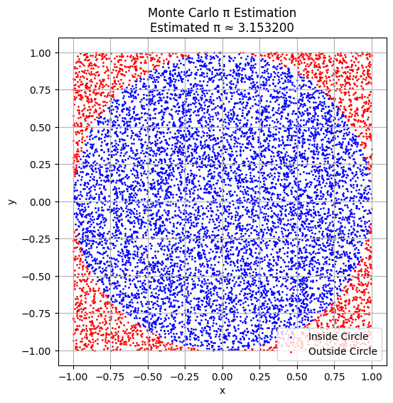
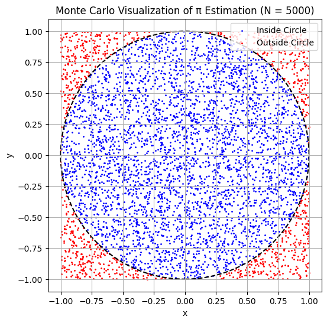

Problem 2
Estimating π Using Monte Carlo Methods
Theoretical Foundation
To estimate π using randomness, we consider a geometric probability setup.
- Draw a square of side length 2, centered at the origin. This square spans from \(-1\) to \(1\) along both the x and y axes.
- Inside this square, draw a unit circle (radius \(r = 1\)) also centered at the origin.
Now we generate random points \((x, y)\), where \(x, y \in [-1, 1]\), such that the points are uniformly distributed across the square.
Geometric Areas:
-
Area of the square:
\(\(A_{\text{square}} = 2 \times 2 = 4\)\) -
Area of the unit circle:
\(\(A_{\text{circle}} = \pi \times r^2 = \pi \times 1^2 = \pi\)\)
The probability that a randomly chosen point lands inside the circle is given by the ratio of the areas:
Therefore, if we generate a large number of random points and count how many fall inside the circle, we expect:
Derivation of the Estimation Formula
Given the theoretical relationship:
We can solve for \(\pi\) to get an estimate:
This is the core Monte Carlo estimation formula for π.
How to Check if a Point is Inside the Circle
For any randomly generated point \((x, y)\), it lies inside the unit circle if:
Thus, for each point, compute \(x^2 + y^2\).
If the result is less than or equal to 1, the point is counted as inside the circle.
Monte Carlo Simulation to Estimate π
In this simulation, we:
- Generate \(N\) random points \((x, y)\) inside a square from \([-1, 1] \times [-1, 1]\).
- Count how many of them fall inside the unit circle using the condition \(x^2 + y^2 \leq 1\).
- Estimate π using the formula:

Visualization of Monte Carlo Points
To visually understand how the Monte Carlo method estimates π:
- We plot all randomly generated points \((x, y)\) inside the square.
- Points inside the unit circle (\(x^2 + y^2 \leq 1\)) are shown in blue.
- Points outside the circle are shown in red.
- The unit circle is inscribed within a square of side length 2, centered at the origin.
This visualization helps us intuitively grasp how the area ratio approximates π.

Analysis of Convergence and Accuracy
Monte Carlo methods are inherently statistical, and their accuracy improves with the number of samples. In this task, we:
- Run simulations with increasing numbers of random points \(N\)
- Track how the estimate of \(\pi\) converges
- Analyze the convergence rate and computational considerations
Convergence Behavior
Let \(E(N)\) denote the estimate of \(\pi\) after generating \(N\) random points. According to the Law of Large Numbers, we expect:
The standard error (typical deviation from the true value) decreases proportionally to:
This means to reduce the error by a factor of 10, we must increase the number of points by a factor of 100.
Computational Considerations
- Pros:
- Simple and easy to implement
- Scales well with parallel computing
-
Works even when geometric integration is hard
-
Cons:
- Convergence is slow (\(\mathcal{O}(1/\sqrt{N})\))
- Needs a very large \(N\) for high precision (e.g., millions of points)
Simulation: Estimate Convergence Plot
We simulate π estimation for a range of \(N\) values and plot the results to visualize convergence.